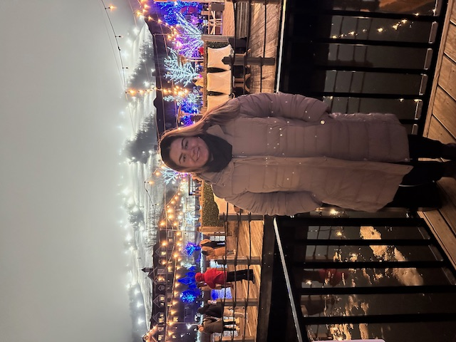

About Me
Hello there! 🌟
I'm a perpetually happy soul on a perpetual journey of learning and exploration. My name is Katyayni, and I'm passionate about embracing the beauty of life in every moment. With an insatiable curiosity, I find joy in discovering new things, whether it's delving into the realms of knowledge, immersing myself in the melodies of music, or simply marveling at the wonders of the world around me.
Life, to me, is a symphony of experiences waiting to be played, a canvas ready to be painted with the vibrant colors of adventure and growth. I believe in the power of positivity and the magic of embracing each day with a smile, spreading happiness wherever I go.
When I'm not busy uncovering the secrets of the universe or dancing to the rhythm of life, you can often find me lost in the melodies of my favorite tunes, letting music be the soundtrack to my soul's journey. Whether it's the soothing tunes of classical compositions or the upbeat rhythms of modern melodies, music has a way of touching my heart and lifting my spirits.
I'm also a firm believer in the importance of human connections and the beauty of shared experiences. I cherish meaningful conversations, laughter-filled moments, and the warmth of genuine connections that enrich my life's tapestry.
In essence, I'm just Katyayni, a happy human being with a zest for life, a love for learning, and a heart full of dreams. I'm excited to embark on this journey called life, embracing every twist and turn with open arms and a heart full of joy.
Let's make each moment count and create beautiful memories together! ✨